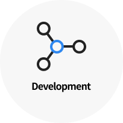
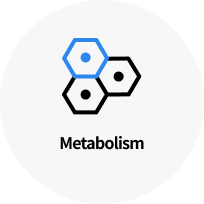

최신 분석법인 Olink 패널을 이용하여 빠르고 합리적인 비용으로
단백질 Multiplex-Screening 서비스를 제공합니다
Olink 는 항체 기반 면역 분석법인 PEA(Proximity Extension Assay)기술을 이용하여 단백체 정보를 해석하는 서비스 입니다.

마크로젠은 최신 단백질(Protein) 분석 기술을 이용해 단백질 스크리닝 서비스를 제공합니다. 단백질은 RNA에서 번역(Translation)을 통해 만들어지는 유전정보의 최종산물 입니다. 하지만 유전적 정보와 환경적 정보가 결합되어 나타나는 표현형인 단백질은 실제 생명현상을 반영하여 활용도는 높지만 그동안 접근성이 낮아 연구의 어려움이 있었습니다.
마크로젠은 기존 단백질(Protein) 분석 기술이 가지고 있던 단점들을 보완한 Olink 분석 서비스를 통해 전 세계 연구자들에게 Proteomic solution을 제공해드리고 있으며, Genomic 데이터와
단백질(Protein)데이터를 통합하는 멀티오믹스(Multi-omics) 분석을 통해 환자 개인에게 최적화된 맞춤의학을 실현시키는 목표를 가지고 있습니다.
SERVICE
Olink
관심있는 분야의 여러 단백질을 한번에 분석하여 바이오마커에 대한 식별 및 정량화를 하는 고품질 면역 분석법 입니다.

마크로젠은 Olink 패널을 이용하여 screening에서 타깃 발굴 및 검증에 이르기까지 효율적인 단백질 바이오마커 발굴을 위한 다양한 솔루션을 제공합니다.
Olink의 PEA(Proximity Extension Assay)는 항체 기반 면역분석법을 DNA기반 중합효소연쇄반응(PCR)법과 결합 시킨 방법으로 DNA oligo nucleotide(barcode)로 표지된 한 쌍의 항체(antibody)가 샘플에 존재하는 표적 단백질에 동시에 결합하면 이후 실시간 정량 PCR(qPCR) 또는 NGS 플랫폼을 이용하여 판독하는 기술입니다. 그 결과 수백 개의 단백질 바이오마커의 농도를 동시에 정량화할 수 있고 높은 특이성을 가진 다중분석이 가능하여 단백질 바이오마커 발견 및 개발을 위한 도구로 활용할 수 있습니다.
| 제품 | 컨텐츠 | 특징 |
|---|---|---|
| Olink® Explore 384 Olink® Explore 1536 Olink® Explore 3072 |
~370 Proteins ~1,480 Proteins ~2,960 Proteins |
전체 Olink Protein library 에서 대량 스크리닝 하여 NGS 기술로 분석 |
| Olink® Target 96 | 92 Proteins | 15개 주요 pathway에 대한 연구 가능 (Mouse 패널1개 포함) |
| Olink® Target 48 Cytokine | 45 Proteins | 감염 관련 질병과 Cytokine 관련 연구에 적합하며 절대정량값 제공 가능 |
| Olink® FLEX | 15~21 Proteins | Olink에서 선별하여 구성한 200개 단백질 중에서 Custom 제작 절대정량값 제공 가능 |


- 


- 

※ Olink® Target 96 패널 종류 입니다.
| 분석항목 | 내용 |
|---|---|
| Data analysis of DE | Basic statistics(Fold change, group mean, sd etc.) |
| Identifying differentially expressed protein(T-test, Mann-Whitney U test, etc.) | |
| Multiple testing correction (FDR, Bonferroni etc.) | |
| Clustering Analysis for DEP ( Hierarchical clustering, etc.) |